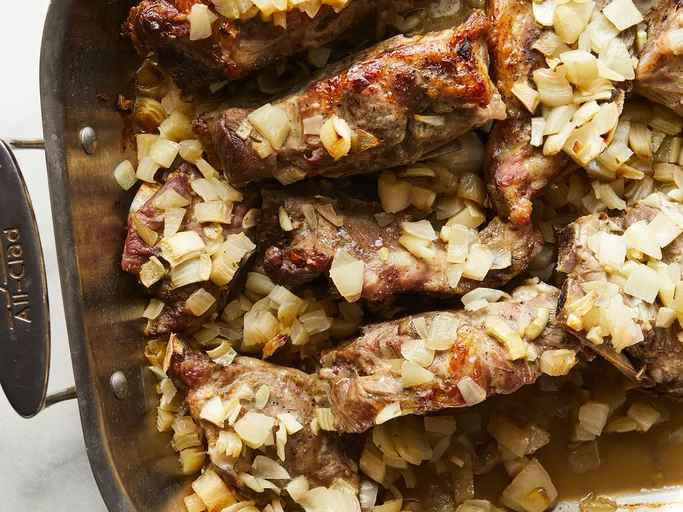

Southern-Style Neck Bones

Description
Pork neck bones are great with greens or cabbage. They can be baked or boiled, this recipe can be fixed either way.
Ingredients
- 2 onions, roughly chopped
- 5 cloves garlic, roughly chopped
- ¼ cup water
- 1 tablespoon distilled white vinegar
- 4 pounds pork neck bones
- 1 ½ teaspoons salt
- 1 teaspoon ground black pepper
Steps
- Preheat the oven to 375 degrees F (190 degrees C).
- Sprinkle 3/4 of the chopped onions and 3/4 of the chopped garlic into the bottom of a roasting pan; pour in water and vinegar. Season neck bones with salt and pepper and place in the roasting pan. Sprinkle remaining onions and garlic over top and cover the roasting pan tightly with aluminum foil.
- Bake in the preheated oven for 2 hours, basting every 30 minutes and recovering with the foil every time you baste.
- Remove the foil and continue cooking until neck bones are golden brown, about 45 more minutes.